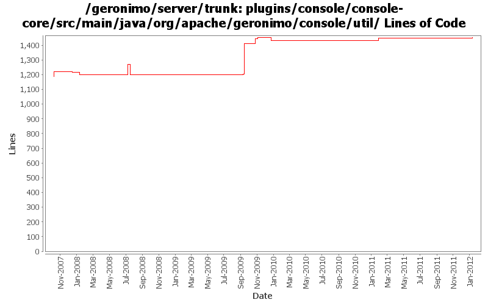

[root]/plugins/console/console-core/src/main/java/org/apache/geronimo/console/util

| Author | Changes | Lines of Code | Lines per Change |
|---|---|---|---|
| Totals | 30 (100.0%) | 509 (100.0%) | 16.9 |
| rwonly | 3 (10.0%) | 208 (40.9%) | 69.3 |
| djencks | 11 (36.7%) | 135 (26.5%) | 12.2 |
| shivahr | 4 (13.3%) | 73 (14.3%) | 18.2 |
| xuhaihong | 7 (23.3%) | 57 (11.2%) | 8.1 |
| pmcmahan | 3 (10.0%) | 32 (6.3%) | 10.6 |
| jdillon | 1 (3.3%) | 3 (0.6%) | 3.0 |
| genspring | 1 (3.3%) | 1 (0.2%) | 1.0 |
GERONIMO-6259 don't try to mess up pax logging so hard
5 lines of code changed in 1 file:
GERONIMO-6058 Replace StringBuffer usage with StringBuilder
0 lines of code changed in 2 files:
GERONIMO-5769 Web Application Bundles (WABs) do not show up in admin console
1 lines of code changed in 1 file:
GERONIMO-5782 Avoid a deadlock undeploying an EBA application
17 lines of code changed in 1 file:
XBEAN-148 use new xbean-bundleutils
1 lines of code changed in 1 file:
GERONIMO-4965 update to DI changes in pluto
31 lines of code changed in 1 file:
fix problem in EarConfigBuilder when constructing sub-configurations for wars. Rename DeploymentContext.getBundle to getDependencyBundle to try to make it clearer that it is temporary and not always available. Start updating pluto/console stuff for pluto 2.
3 lines of code changed in 3 files:
GERONIMO-4931 Enable ActiveMQ plugin in the OSGI environment.
Update the helper method in the PortletManager to get the bundle object of the template rar resource
12 lines of code changed in 1 file:
Cleanup some codes in the ActiveMQ plug-in
17 lines of code changed in 1 file:
Clean console codes and remove unused classes
23 lines of code changed in 2 files:
GERONIMO-4790 Migrate debug-views code to base on the up-to-date dojo: Sub-task 1
208 lines of code changed in 3 files:
GERONIMO-4625 JMS statistics does not work correctly while the server url is of vm protocol
5 lines of code changed in 1 file:
Reverting changes made in "Revision: 675220 GERONIMO-4189 Enable Geronimo Eclipse Plug-in (GEP) to get dynamic information from server". Geronimo Eclipse Plug-in should instead use JMX (please see GERONIMODEVTOOLS-434).
0 lines of code changed in 1 file:
GERONIMO-4189 Enable Geronimo Eclipse Plug-in (GEP) to get dynamic information from server
73 lines of code changed in 1 file:
(GERONIMO-3985) Use SLF4J as the primary logging facade for Geronimo
3 lines of code changed in 1 file:
GERONIMO-3732. Move the rest of deployment functionality out of console base and (mostly) into plugin-portlets. Revert the accidental menu name change for looking at web apps
0 lines of code changed in 1 file:
GERONIMO-3732 steps 1, 2. Move plugin management and some jsr88 base code into a new module
0 lines of code changed in 2 files:
GERONIMO-3708 turn off gbean reference proxies
78 lines of code changed in 1 file:
GERONIMO-3431 Enhance 'Create Plan' portlet to auto handle references to JavaMail resources in a web-app
0 lines of code changed in 2 files:
prevent classloader warning messages in the WAR modules portlet (and others) by
using the configuration's classloader to load its interfaces. also tweak the
technique used for reading the DD from a deployable, retaining the normal
classloader behavior from previous versions of the server for backwards compatibility.
0 lines of code changed in 2 files:
GERONIMO-3509 copy the new admin console and its plugins into the server project so they
can be built and released together.
also, merge recent improvements made to the old admin console into the new console:
revs 581420 580352 576651 574637 573719 573616
32 lines of code changed in 1 file: